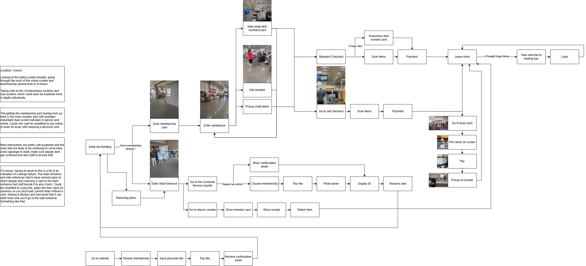

Costco Interaction Field Study
· Week 3
(This log is temporary and subject to further updates.)
Conducted an interaction field study at Costco. Observed, noted, and mapped the interactions and steps throughout the user experience. And observed the decision points, frictions, and design failures of it.

Excerpt text from the image:
Looking at the entire system broadly, going through the most of the whole system and backtracking several time to re-asess.Taking note of lots of interactions systems and sub-systems which could each be explored more in depth individually.
The getting the membership part looking from up here is the most complex part with probably redundant dual system between in person and online, Could very well be simplified to just online, or even do away with requiring a physical card.
Most interactions are pretty well explained and the ones that are likely to be confusing to some have extra signange to really make sure people dont get confused and also staff to ensure that
Of course, having to resort to this is a bit of an indication of a design failure. The main entrance and side entrances had to have several signs to direct people and scanning a card to the main entrance had staff beside it to also check. Could be simplified to using like, gates like they have on subways so you physically cannot enter without a card, making it obvious and fool-proof that if you didnt have one you'd go to the side entrance. Something like that.